HƯỚNG DẪN SỬ DỤNG
(Chức năng tạo tờ khai Hải quan bằng ECUS.AI - Quy trình 3 bước)
Để phân tích chứng từ của bộ hồ sơ tờ khai và tạo tờ khai hải quan, sử dụng chức năng ECUS.AI. Người khai thực hiện theo quy trình 3 bước đơn giản dưới đây
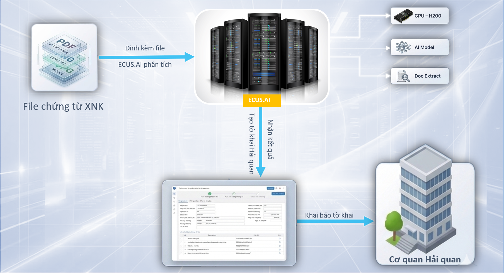
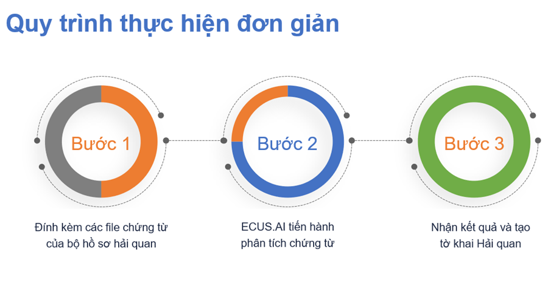
1. Hướng dẫn chi tiết tạo tờ khai bằng ECUS.AI.
Người khai truy cập vào menu Tờ khai hải quan / Tạo tờ khai bằng ECUS.AI:
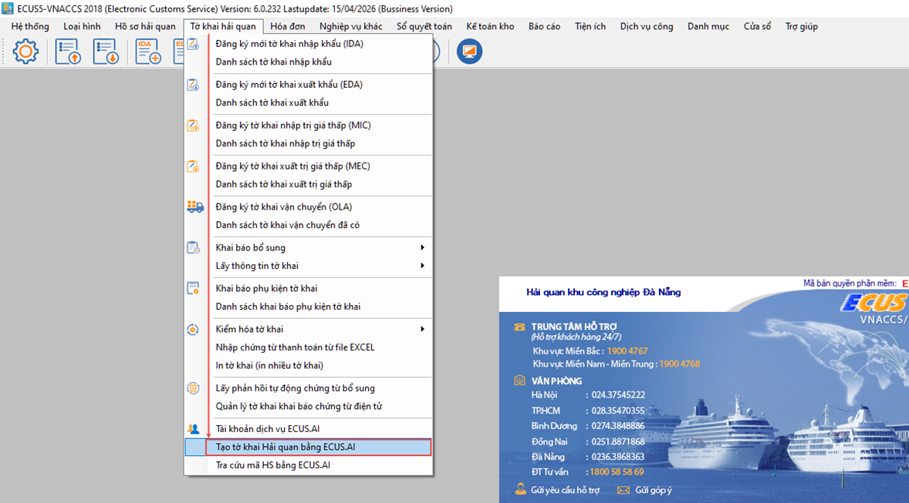
Bước 1 – Người khai đính kèm các file chứng từ của bộ hồ sơ
Tại giao diện chức năng, người khai chọn loại hình hồ sơ (Kinh doanh, Sản xuất xuất khẩu, Gia công, Chế xuất) để phần mềm đưa ra danh sách các chứng từ mặc định cần có:
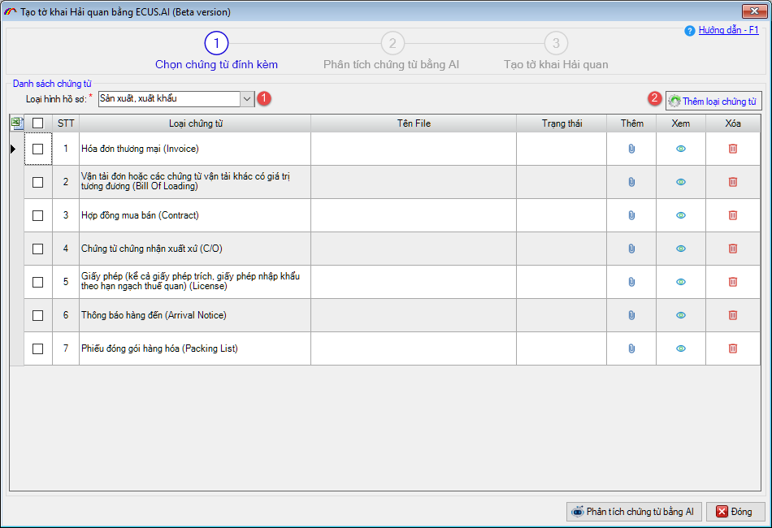
Bạn có thể bổ sung thêm chứng từ khác bằng cách nhấn vào (2) Thêm loại chứng từ.
Người khai lần lượt đính kèm các file chứng từ đang có của bộ hồ sơ như: Hóa đơn, vận đơn, hợp đồng, C/O… bằng cách nhấn vào biểu tượng đính kèm tại cột Thêm.
Lưu ý: Định dạng file đính kèm phải là PDF, PNG hoặc JPG.
Lưu ý: Định dạng file đính kèm phải là PDF, PNG hoặc JPG.
Bước 2 – ECUS.AI tiến hành phân tích chứng từ tự động.
Khi đã đính kèm các file chứng từ của bộ hồ sơ, người khai nhấn vào nút Phân tích chứng từ bằng AI:
Lưu ý: Khi thực hiên phân tích chứng từ, hệ thống sẽ yêu cầu đăng nhập cho lần đầu của phiên làm việc, nếu chưa có tài khoản sử dụng dịch vụ ECUS.AI người khai tham khảo hướng dẫn đăng ký tài khoản sử dụng dịch vụ ECUS.AI
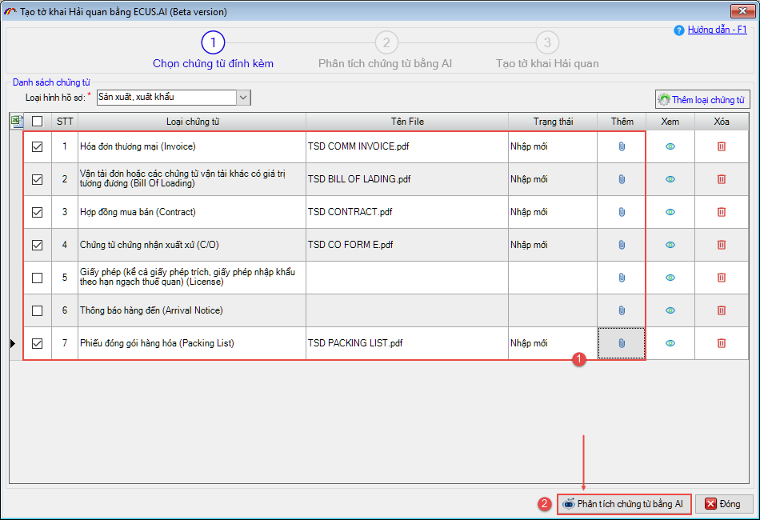
ECUS.AI với sức mạnh của Nvidia GPU H200, AI Model tiên tiến và công nghệ Doc Extract sẽ thực hiện phân tích chứng từ hoàn toàn tự động, bạn chờ đến khi quá trình phân tích kết thúc.
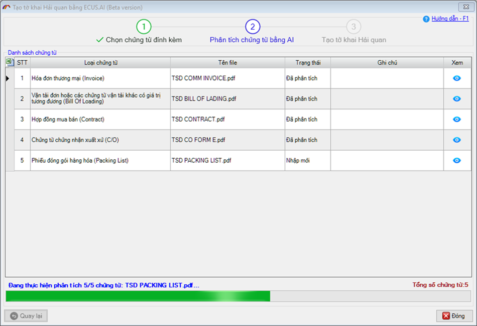
Khi quá trình phân tích thành công cho tất cả chứng từ, hệ thống sẽ hiển thị màn hình kết quả phân tích để người dùng kiểm tra và tạo tờ khai.
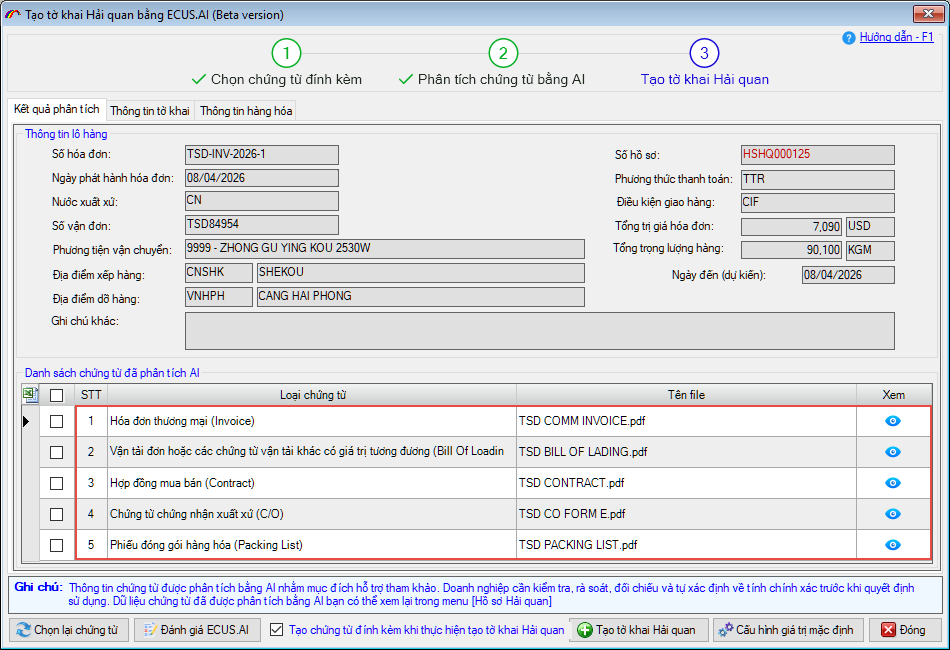
Bước 3 – Kiểm tra kết quả phân tích và tạo tờ khai hải quan.
Sau khi phân tích thành công, kết quả phân tích sẽ được hiển thị tại 3 tab bao gồm:
a) Thông tin kết quả phân tích
Đây là nơi hiển thị các thông tin tổng hợp từ các chứng từ hóa đơn, vận đơn, hợp đồng… để lấy ra thông về số hóa đơn, ngày phát hành, số vận đơn, phương tiện vận chuyển, cảng địa điểm xếp / dỡ hàng, điều kiện giao hàng, trọng lượng hàng hóa, trị giá hàng hóa….
Bên dưới là danh sách các chứng từ đã phân tích, người dùng có thể kiểm tra, đối chiếu các thông tin kết quả phân tích với chứng từ gốc một cách trực quan, bằng cách nhấn vào biểu tượng hình con mắt tại cột Xem.
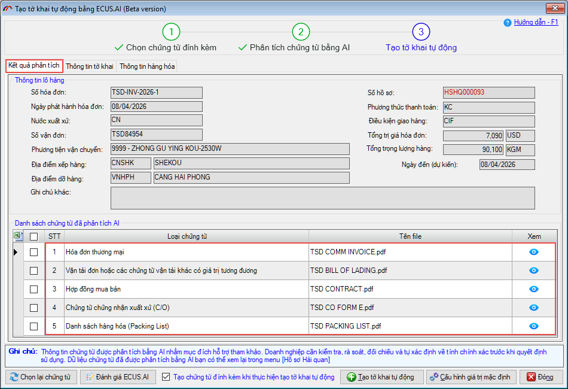
Màn hình kiểm tra đối chiếu thông tin hóa đơn:
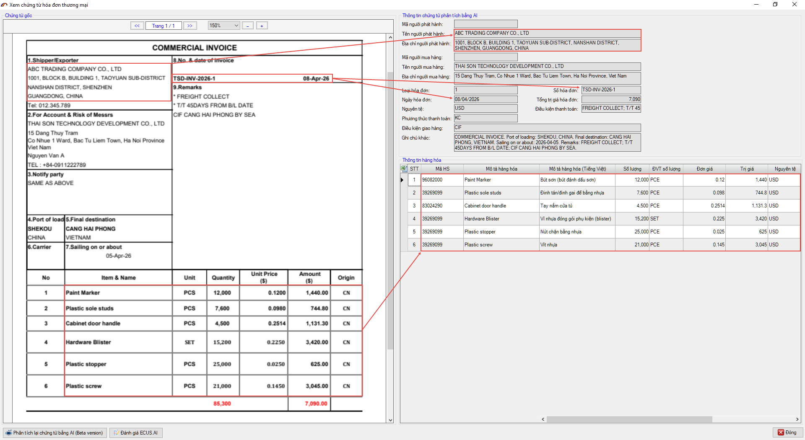
Màn hình kiểm tra đối chiếu thông tin vận tải đơn:
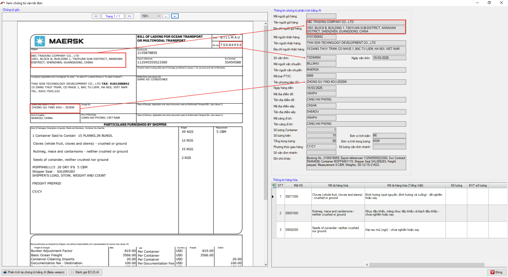
Màn hình kiểm tra đối chiếu thông tin Packing List:
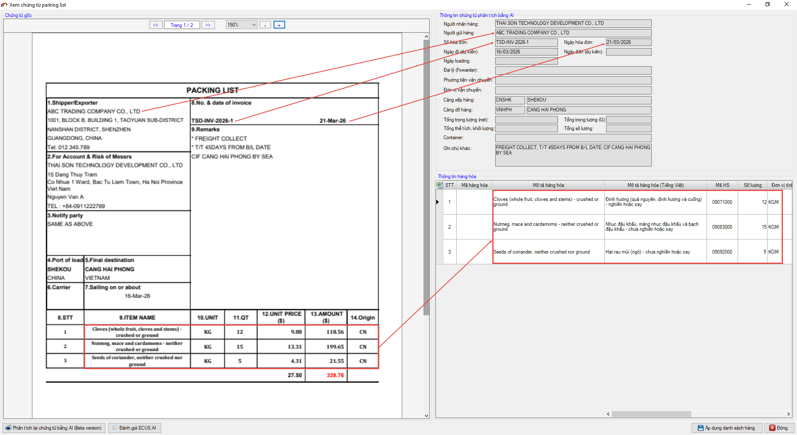
Tại mỗi màn hình kiểm tra chi tiết, người dùng có thể yêu cầu hệ thống ECUS.AI phân tích lại cho chính chứng từ đang kiểm tra bằng cách nhấn vào nút: Phân tích lại chứng từ bằng AI:
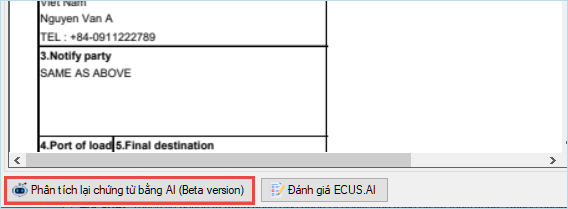
Riêng với chứng từ Packing list sẽ có thêm nút: Áp dụng danh sách hàng. Nút này được dùng để lấy thông tin danh sách hàng hóa trên Packing list thay thế cho danh sách hàng tại tab Thông tin hàng hóa (trong trường hợp người dùng muốn thay thế):
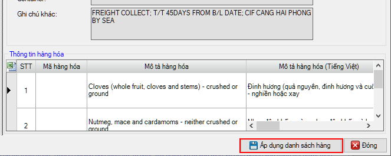
b) Thông tin tờ khai
Phần mềm tự động xác định thông tin đơn vị xuất khẩu, nhập khẩu, thông tin hợp đồng, loại hình tờ khai là nhập khẩu hay xuất khẩu, phân loại tổ chức cá nhân, mã loại phương thức vận chuyển.
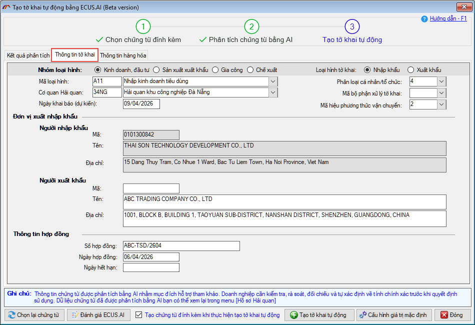
Nhóm loại hình, mã loại hình cũng được hệ thống xác định dựa vào loại hình hồ sơ mà người dùng đã chọn ở bước 1, người dùng có thể thay đổi mã loại hình cụ thể cho phù hợp
c) Thông tin hàng hóa
Thông tin hàng hóa được ECUS.AI tự động xác định mã số hàng hóa (HS code) dựa vào thông tin mô tả hàng hóa trên chứng từ, dịch tự động tên hàng sang Tiếng Việt và các thông tin về xuất xứ, số lượng, đơn vị tính, đơn giá, trị giá của hàng hóa.
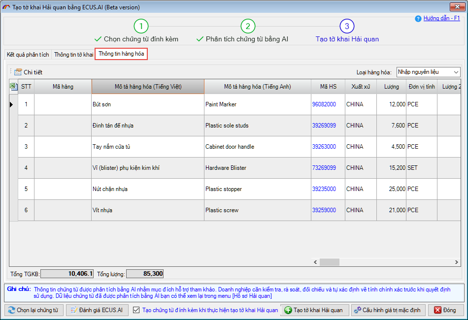
Ngoài ra, hệ thống còn đưa ra danh sách HS code gợi ý với độ tin cậy cao để người dùng tham khảo và đưa ra quyết định sử dụng. Để xem danh sách HS gợi ý, người dùng nhấn nút Chi tiết để xem chi tiết dòng hàng:
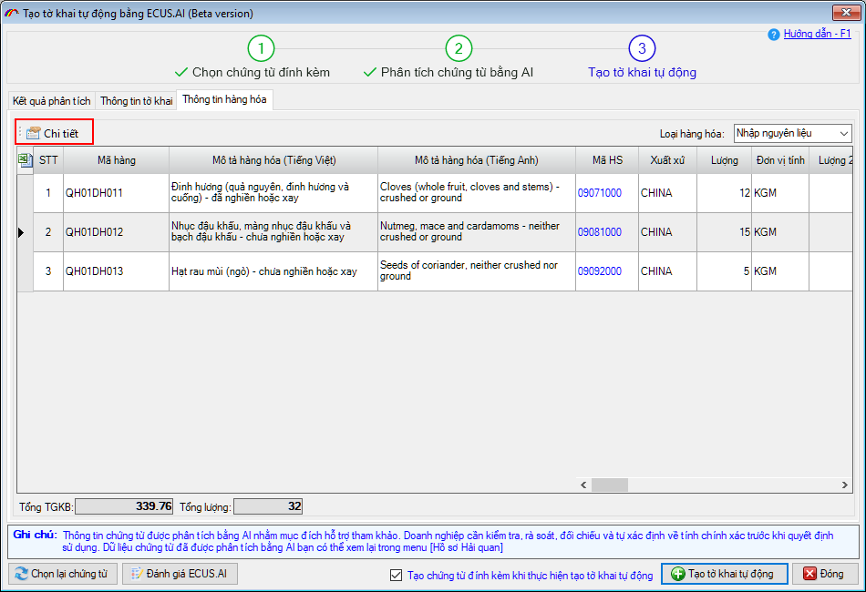
Tiếp tục nhấn nút Chi tiết tại chỉ tiêu mã số hàng hóa (HS):
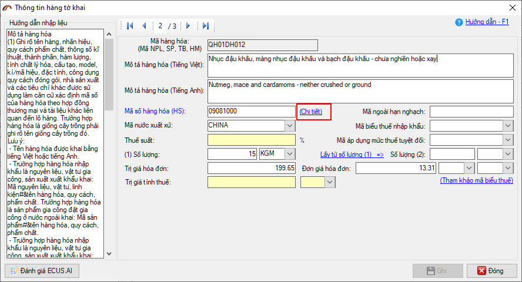
Màn hình danh sách HS gợi ý sẽ hiện ra:
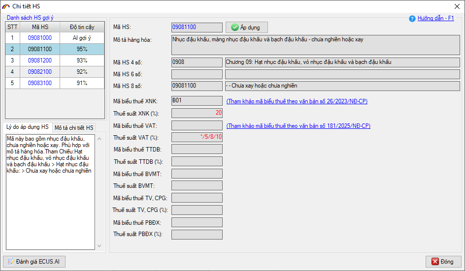
Phía bên trái màn hình là danh sách các HS gợi ý kèm theo độ tin cậy, khi nhấn vào HS gợi ý, phía bên phải màn hình sẽ hiện ra các thông tin chi tiết liên quan như: Tên mô tả hàng hóa theo Chương, theo HS 4 số, 6 số và 8 số, cùng với mã biểu thuế XNK, thuế GTGT, các loại thuế nhập khẩu bổ sung khác kèm văn bản pháp luật để người dùng xem thông tin. Nếu thấy HS gợi ý nào phù hợp, đúng với thông tin hàng hóa hơn so với HS do AI tự xác định, người khai chọn và nhấn nút Áp dụng để thay thế.
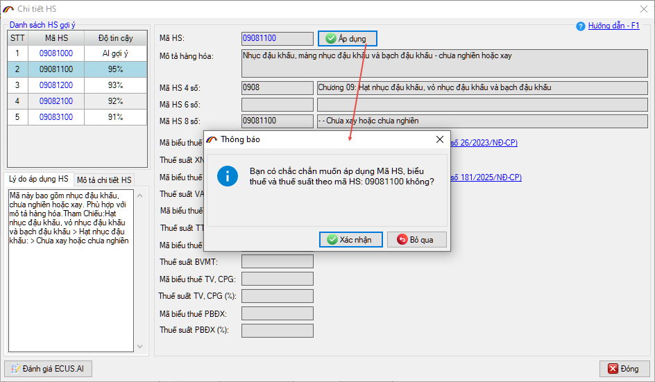
d) Thực hiện tạo tờ khai hải quan
Cấu hình giá trị mặc định khi tạo tờ khai:
Với một số tiêu chí không có trên chứng từ để phân tích, người khai có thể thiết lập giá trị mặc định để khi tạo tờ khai, hệ thống sẽ đưa các giá trị này vào chỉ tiêu tương ứng trên tờ khai, người khai không phải nhập thủ công. Người khai cấu hình bằng cách nhấn vào nút Cấu hình giá trị mặc định:
Với một số tiêu chí không có trên chứng từ để phân tích, người khai có thể thiết lập giá trị mặc định để khi tạo tờ khai, hệ thống sẽ đưa các giá trị này vào chỉ tiêu tương ứng trên tờ khai, người khai không phải nhập thủ công. Người khai cấu hình bằng cách nhấn vào nút Cấu hình giá trị mặc định:
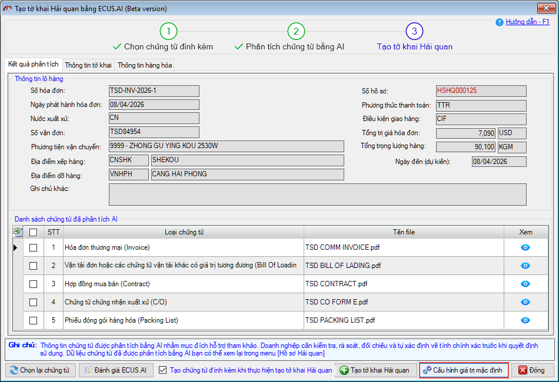
Tại đây, người khai có thể thiết lập giá trị mặc định cho các chỉ tiêu thông tin tờ khai nhập khẩu / xuất khẩu như: mã phân loại hàng hóa, mã phân loại tổ chức cá nhân, mã kết quả kiểm tra nội dung (container), mã phân loại hình thức hóa đơn, người nộp thuế, lý do đề nghị BP, chứng từ hạn mức…
Mục - Chuẩn hóa lại mã cảng, mã địa điểm: Khi đánh dấu tích chọn vào Chuẩn hóa mã theo tên cảng, địa điểm, hệ thống sẽ dựa vào tên cảng trên chứng từ để map thông tin trong danh mục cảng, địa điểm khai báo VNACCS để lấy ra mã cảng chính xác nhất (nếu người dùng không tích chọn, hệ thống sẽ lấy theo kết quả phân tích chứng từ của ECUS.AI để đưa vào tờ khai).
Lưu ý:
- Các tiêu chí có dấu * màu đỏ là các chỉ tiêu bắt buộc trên tờ khai, người dùng nên thiết lập.
- Việc thiết lập này tách riêng cho tờ khai nhập khẩu và xuất khẩu
- Người khai chỉ cần thiết lập 1 lần cho đến khi có thay đổi
- Các tiêu chí có dấu * màu đỏ là các chỉ tiêu bắt buộc trên tờ khai, người dùng nên thiết lập.
- Việc thiết lập này tách riêng cho tờ khai nhập khẩu và xuất khẩu
- Người khai chỉ cần thiết lập 1 lần cho đến khi có thay đổi
| Thiết lập cấu hình tờ khai nhập | Thiết lập cấu hình tờ khai xuất |
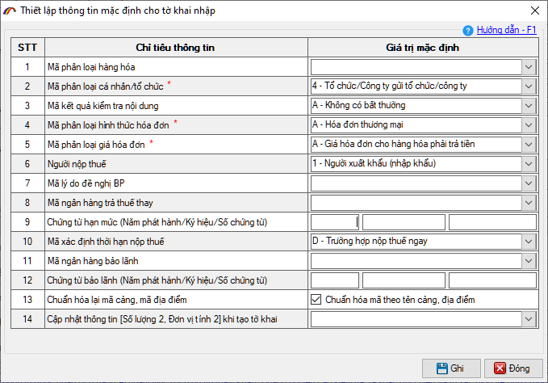 |
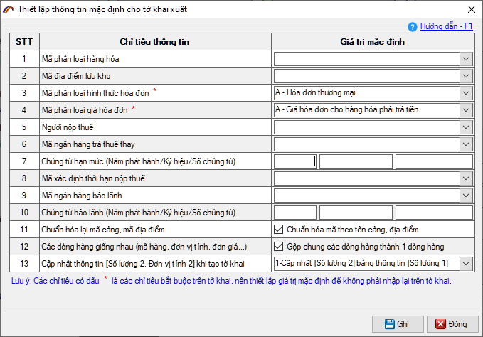 |
Sau khi kiểm tra kết quả phân tích, nếu các thông tin đã chính xác, người khai nhấn nút: Tạo tờ khai Hải quan:
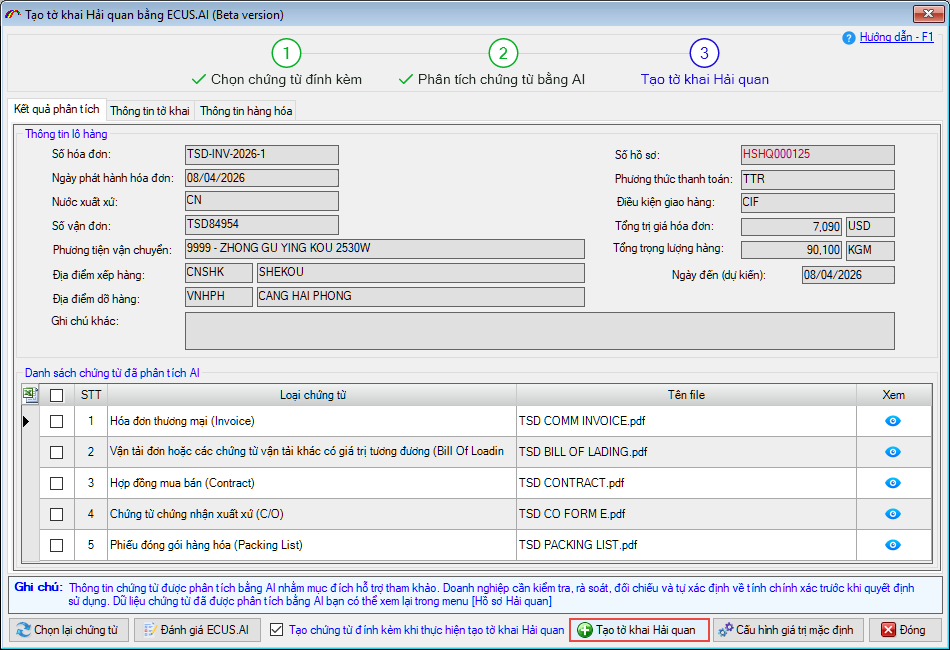
Phần mềm sẽ hiện bảng thông báo lựa chọn hàng hóa cho tờ khai:
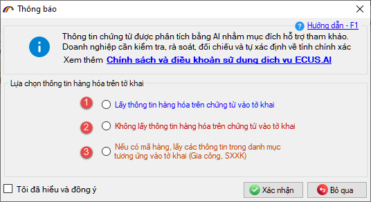
Lựa chọn 1: Lấy thông tin hàng hóa trên chứng từ vào tờ khai.
Với lựa chọn này, phần mềm sẽ đưa toàn bộ thông tin hàng hóa hiện có trong tab Thông tin hàng hóa để đưa vào tờ khai.
Lựa chọn 2: Không lấy thông tin hàng hóa trên chứng từ vào tờ khai.
Với lựa chọn này, khi tạo tờ khai sẽ không bao gồm thông tin hàng hóa, người khai sẽ tự nhập thủ công danh sách hàng vào tờ khai (nhập thủ công, import từ excel, chọn từ danh mục…).
Lựa chọn 3: Nếu có mã hàng, lấy các thông tin trong danh mục tương ứng vào tờ khai (Gia công, SXXK)
Với lựa chọn này, phần mềm sẽ dựa vào mã hàng để MAP thông tin Tên hàng, đơn vị tính, mã số HS theo danh mục đã đăng ký trước đó. Lựa chọn này chỉ áp dụng đối với loại hình Gia công hoặc SXXK.
Cuối cùng, người khai đánh dấu tích chọn vào mục Tôi đã hiểu và đồng ý, sau đó nhấn nút Xác nhận để phần mềm tạo tờ khai tự động.

Sau khi tạo tờ khai thành công, hệ thống sẽ đưa các kết quả phân tích vào chỉ tiêu thông tin tương ứng trên tờ khai, người khai kiểm tra, xác nhận các tiêu chí thông tin và tiến hành khai báo lên cơ quan Hải quan.
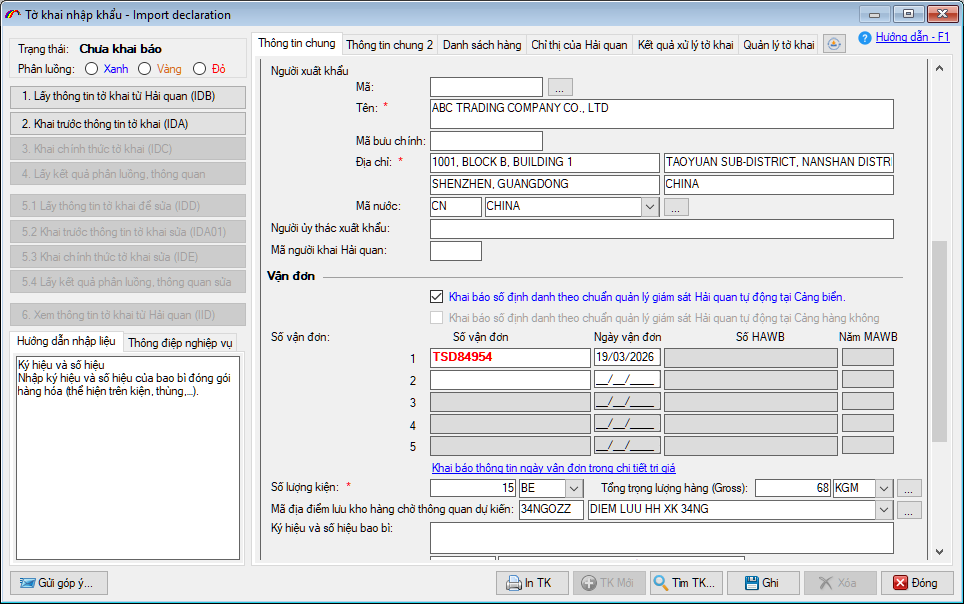
Các thông tin trong tab Thông tin chung 2:
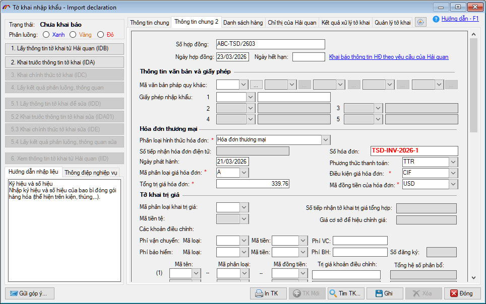
Thông tin danh sách hàng của tờ khai:
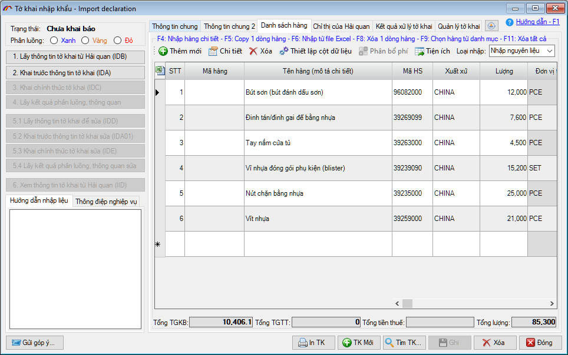
Khi tạo tờ khai, hệ thống cũng mặc định tạo các chứng từ đính kèm cho tờ khai, người khai kiểm tra tại tab Quản lý tờ khai:
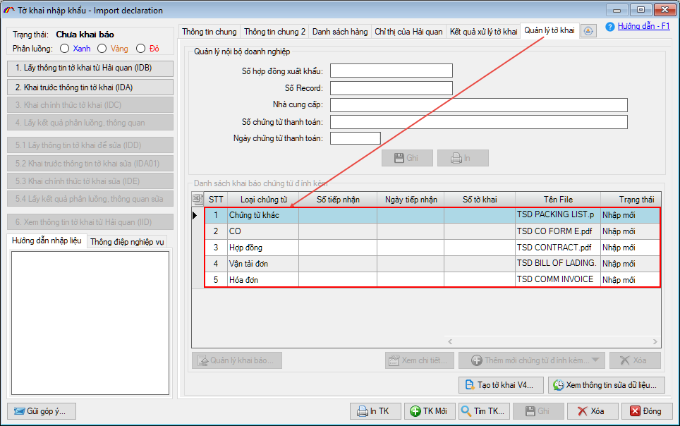
Sau khi tờ khai được khai báo, người khai có thể khai các chứng từ đính kèm này ngay mà không cần phải nhập dữ liệu.
Lưu ý: Để hệ thống tự động tạo chứng từ đính kèm, người dùng phải đảm bảo mục: Tạo chứng từ đính kèm khi tạo tờ khai Hải quan đang được tích chọn khi thực hiện tạo tờ khai (hệ thống mặc định đã tích chọn).
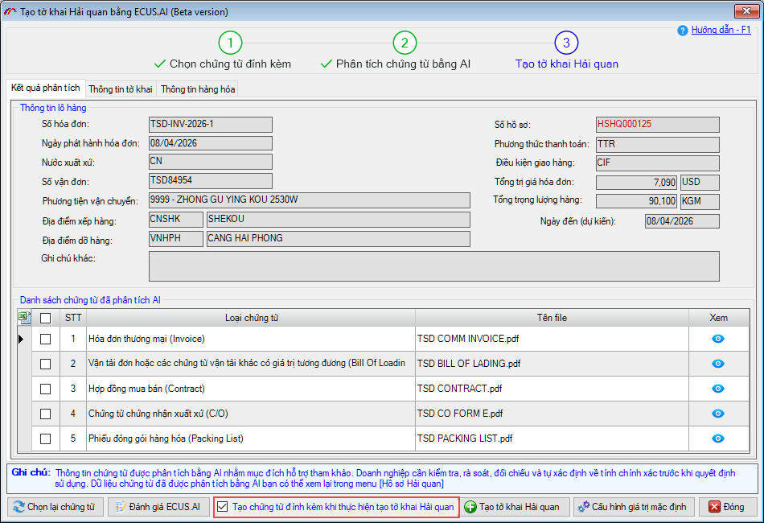
2. Xử lý tình huống ngoại lệ.
a) Trường hợp kết thúc quá trình phân tích có lỗi
Trường hợp quá trình phân tích kết thúc có lỗi xảy ra, hệ thống sẽ thông báo nội dung xảy ra lỗi chi tiết tại cột Ghi chú (các lỗi thường gặp như: đính kèm file chứng từ không đúng với loại chứng từ, file đính kèm bị hỏng, kém chất lượng…):
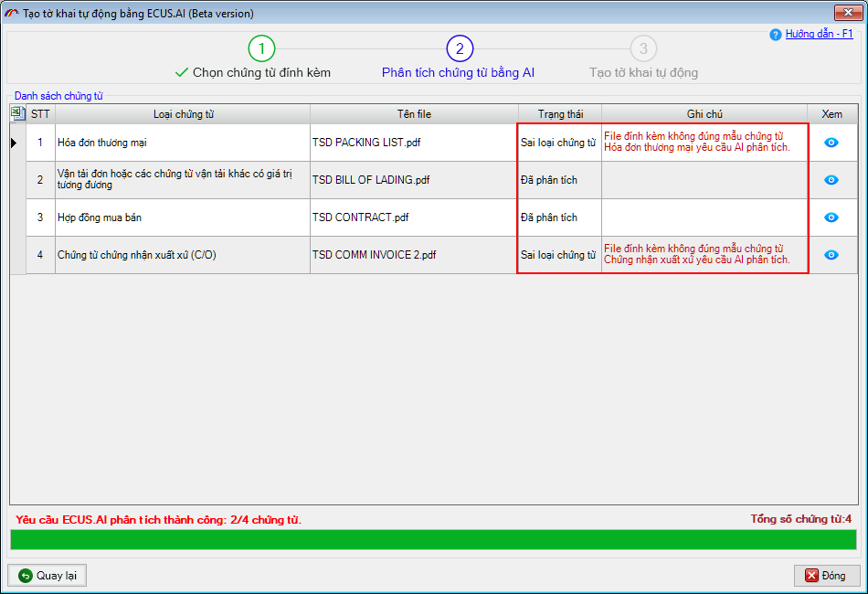
Với trường hợp này, người khai nhấn vào nút Quay lại để quay lại bước 1 và thực hiện đính kèm lại file chứng từ cho đúng, đảm bảo chất lượng:
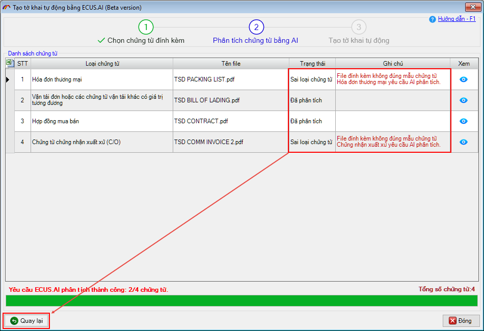
Lưu ý: Khi thực hiện phân tích lại, mặc định phần mềm chỉ tiến hành phân tích lại cho các chứng từ bị lỗi trước đó, khi chuyển sang màn hình phân tích bạn cũng chỉ nhìn thấy các chứng từ phân tích lại, các chứng từ đã phân tích thành công trước đó không hiển thị trong danh sách (Nếu người dùng vẫn muốn phân tích lại toàn bộ chứng từ thì đánh dấu tích chọn vào các chứng từ có trạng thái Đã phân tích):
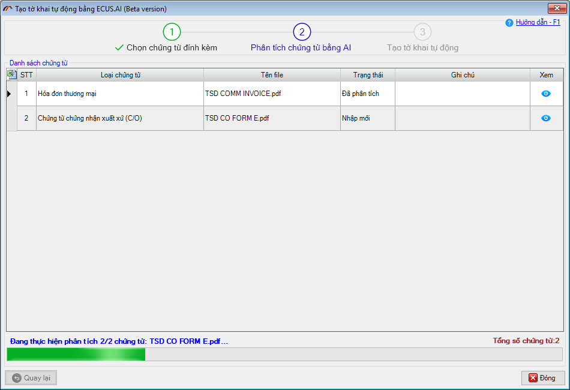
b) Trường hợp kiểm tra kết quả phân tích phát hiện sai sót
Sau khi kiểm tra chi tiết kết quả phân tích tại bước 3, người khai phát hiện đã đính kèm nhầm file chứng từ hoặc vì lý do nào đó muốn thực hiện phân tích lại. Lúc này, người khai nhấn vào nút: Chọn lại chứng từ
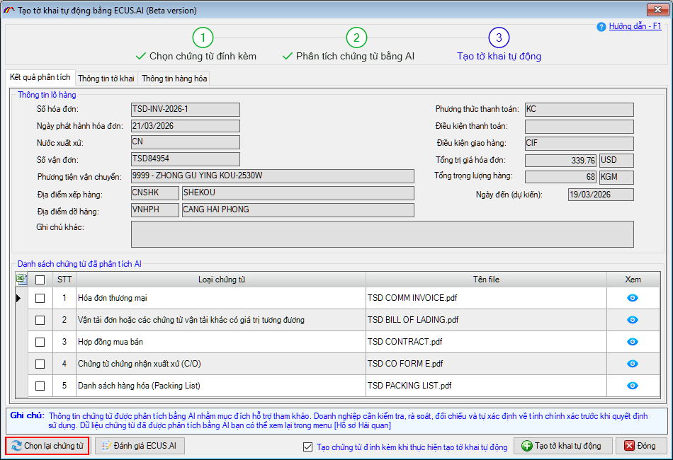
Hệ thống sẽ quay lại bước 1 để người dùng chọn và đính kèm lại file chứng từ, sau đó thực hiện phân tích lại.
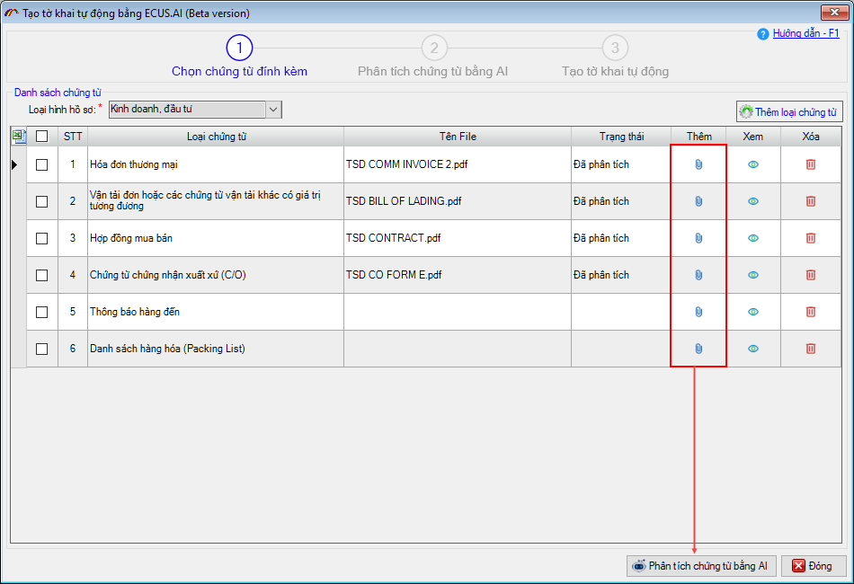
c) Các tình huống phát sinh khác trong quá trình sử dụng
Trong quá trình sử dụng chức năng tạo tờ khai Hải quan bằng ECUS.AI, người khai gặp các lỗi phát sinh, các góp ý về dữ liệu có thể liên hệ trung tâm hỗ trợ khách hàng 24/7 của Công ty Thái Sơn trên toàn quốc để được tư vấn và hỗ trợ.
Bản quyền © thuộc về Công ty TNHH Phát triển công nghệ Thái Sơn